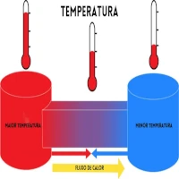

Energia termica
Energia térmica é a energia relacionada à temperatura de um corpo, resultante da movimentação das suas partículas (átomos e moléculas). Essa energia é transferida na forma de calor, do corpo mais quente para o mais frio, até que atinjam o equilíbrio térmico. Ela pode ser gerada a partir de diversas fontes, como a queima de combustíveis fósseis (carvão, gás, petróleo), energia nuclear, biomassa, geotérmica ou solar, e é convertida em eletricidade ou usada diretamente em processos industriais e para aquecimento.
